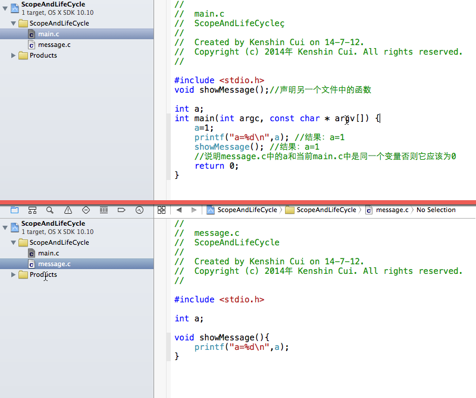

iOS开发系列--C语言之存储方式和作用域
2014-07-18 20:37 by KenshinCui, 18864 阅读, 6 评论, 收藏, 编辑概述
基本上每种语言都要讨论这个话题，C语言也不例外，因为只有你完全了解每个变量或函数存储方式、作用范围和销毁时间才可能正确的使用这门语言。今天将着重介绍C语言中变量作用范围、存储方式、生命周期、作用域和可访问性。
变量作用范围
在C语言中变量从作用范围包括全局变量和局部变量。全局变量在定义之后所有的函数中均可以使用，只要前面的代码修改了，那么后面的代码中再使用就是修改后的值；局部变量的作用范围一般在一个函数内部（通常在一对大括号{}内），外面的程序无法访问它，它却可以访问外面的变量。
// // main.c // ScopeAndLifeCycle // // Created by Kenshin Cui on 14-7-12. // Copyright (c) 2014年 Kenshin Cui. All rights reserved. // #include <stdio.h> int a=1; void changeValue(){ a=2; printf("a=%d\n",a); } int main(int argc, const char * argv[]) { int b=1; changeValue(); //结果：a=2 printf("a=%d,b=%d\n",a,b); //结果：a=2,b=1 ，因为changeValue修改了这个全局变量 return 0; }
变量存储方式
C语言的强大之处在于它能直接操作内存（指针），但是要完全熟悉它的操作方式我们必须要弄清它的存储方式。存储变量的位置分为：普通内存(静态存储区)、运行时堆栈（动态存储区）、硬件寄存器（动态存储区），当然这几种存储的效率是从低到高的。而根据存储位置的不同在C语言中又可以将变量依次分为：静态变量、自动变量、寄存器变量。
静态变量
首先说一下存储在普通内存中的静态变量，全局变量和使用static声明的局部变量都是静态变量，在系统运行过程中只初始化一次（在下面的例子中虽然变量b是局部变量，在外部无法访问，但是他的生命周期一直延续到程序结束，而变量c则在第一次执行完就释放，第二次执行时重新创建）。
// // 2.1.c // ScopeAndLifeCycle // // Created by Kenshin Cui on 14-7-12. // Copyright (c) 2014年 Kenshin Cui. All rights reserved. // #include <stdio.h> int a=1; //全局变量存储在静态内存中，只初始化一次 void showMessage(){ static int b=1; //静态变量存储在静态内存中，第二次调用不会再进行初始化 int c=1; ++b; a+=2; printf("a=%d,b=%d,c=%d\n",a,b,c); } int main(int argc, const char * argv[]) { showMessage(); //结果：a=3,b=2,c=1 showMessage(); //结果：a=5,b=3,c=1 return 0; }
自动变量
被关键字auto修饰的局部变量是自动变量，但是auto关键字可以省略，因此可以得出结论：所有没有被static修饰的局部变量都是自动变量。
// // 1.3.c // ScopeAndLifeCycle // // Created by Kenshin Cui on 14-7-12. // Copyright (c) 2014年 Kenshin Cui. All rights reserved. // #include <stdio.h> #include <stdlib.h> int main(int argc, const char * argv[]) { int a=1; auto int b=2; printf("a=%d,b=%d\n",a,b); //结果：a=1,b=2 ，a和b都是自动变量，auto可以省略 //需要注意的是，上面的自动变量是存储在栈中，其实还可以存储到堆中 char c[]="hello,world!"; long len=strlen(c)*sizeof(char)+1;//之所以加1是因为字符串后面默认有一个\0空操作符不计算在长度内 char *p=NULL;//可以直接写成：char *p; p=(char *)malloc(len);//分配指定的字节存放c中字符串，注意由于malloc默认返回“void *”需要转化 memset(p,0,len);//清空指向内存中的存储内容，因为分配的内存是随机的，如果不清空可能会因为垃圾数据产生不必要的麻烦 strcpy(p,c); printf("p=%s\n",p);//结果：p=hello,world! free(p);//释放分配的空间 p=NULL;//注意让p指向空，否则p将会是一个存储一个无用地址的野指针 return 0; }
当然存储自动变量的栈和堆其实是两个完全不同的空间（虽然都在运行时有效的空间内）：栈一般是程序自动分配，其存储结果类似于数据结构中的栈，先进后出，程序结束时由编译器自动释放；而堆则是开发人员手动编码分配，如果不进行手动释放就只有等到程序运行完操作系统回收，其存储结构类似于链表。在上面的代码中p变量同样是一个自动变量，同样可以使用auto修饰，只是它所指向的内容放在堆上（p本身存放在栈上）。
这里说明几点：malloc分配的空间在逻辑上连续，物理上未必连续；p必须手动释放，否则直到程序运行结束它占用的内存将一直被占用；释放p的过程只是把p指向的空间释放掉，p中存放的地址并未释放，需要手动设置为NULL，否则这将是一个无用的野指针；
寄存器变量
默认情况下无论是自动变量还是静态变量它们都在内存中，不同之处就是自动变量放在一块运行时分配的特殊内存中。但是寄存器变量却是在硬件寄存器中，从物理上来说它和内存处在两个完全不同的硬件中。大家都是知道寄存器存储空间很小，但是它的效率很高，那么合理使用寄存器变量就相当重要了。什么是寄存器变量呢？使用register修饰的int或char类型的非静态局部变量是寄存器变量。没错，需要三个条件支撑：register修饰、必须是int或char类型、必须是非静态局部变量。
除了存储位置不同外，寄存器变量完全符合自动变量的条件，因此它的生命周期其实是和自动变量完全一样的，当函数运行结束后它就会被自动释放。由于寄存器空间珍贵，因此我们需要合理使用寄存器变量，只有访问度很高的变量我们才考虑使用寄存器变量，如果过多的定义寄存器变量，当寄存器空间不够用时会自动转化为自动变量。
// // 1.3.c // ScopeAndLifeCycle // // Created by Kenshin Cui on 14-7-12. // Copyright (c) 2014年 Kenshin Cui. All rights reserved. // #include <stdio.h> int main(int argc, const char * argv[]) { register int a=1; printf("a=%d\n",a); return 0; }
上面我们说到变量的存储类型，其实在C语言中还有两种存储类型：常量存储区和代码存储区，分别用于存储字符串常量、使用const修饰的全局变量以及二进制函数代码。
可访问性
在C语言中没有其他高级语言public、private等修饰符，来限定变量和函数的有效范围，但是却有两个类似的关键字能达到类似的效果：extern和static。
extern
extern作用于变量
我们知道在C语言中变量的定义顺序是有严格要求的，要使用变量则必须在使用之前定义，extern用于声明一个已经存在的变量，这样一来即使在后面定义一个变量只要前面声明了，也同样可以使用。具体的细节通过下面的代码相信大家都可以看明白：
// // 2.1.c // ScopeAndLifeCycle // // Created by Kenshin Cui on 14-7-12. // Copyright (c) 2014年 Kenshin Cui. All rights reserved. // #include <stdio.h> //如果在main函数下面定义了一个变量a，如果在main上面不进行声明是无法在main中使用a的； //同样如果只进行了extern声明不进行定义一样会报错，因为extern并不负责定义变量a而仅仅是声明一个已经定义过的变量； //当然如果说在main上面定义int a;去掉main下面的定义同样是可以的，相当于在上面定义，但如果两个地方都定义a的话（main上面的extern去掉），则程序认为上面的定义是声明，只是省略了extern关键字； //第一种情况，在下面定义，不进行声明，报错 int main(int argc, const char * argv[]) { printf("a=%d\n",a); return 0; } int a; //第二种情况，在上面定义，正确 int a; int main(int argc, const char * argv[]) { printf("a=%d\n",a); return 0; } //第三种情况，在下面定义在上面声明，正确 extern int a; int main(int argc, const char * argv[]) { printf("a=%d\n",a); return 0; } int a; //第四种情况，只在上面声明（编译时没有问题，因为上面的声明骗过了编译器，但运行时报错，因为extern只能声明一个已经定义的变量），错误 extern int a; int main(int argc, const char * argv[]) { printf("a=%d\n",a); return 0; } //第五种情况,上下同时定义（这种方式是正确的，因为上面的定义会被认为是省略了extern的声明），正确 int a; int main(int argc, const char * argv[]) { printf("a=%d\n",a); return 0; } int a; //其实下面的情况也是不会出错的 int a; int a; int main(int argc, const char * argv[]) { printf("a=%d\n",a); return 0; } int a; int a; //第六种情况,将全局变量声明为局部变量，但是它的实质还是全局变量，正确 int a; int main(int argc, const char * argv[]) { extern int a; printf("a=%d\n",a); return 0; } int a; //第七种情况，在函数内部重新定义一个变量a,虽然不会报错，但是两个a不是同一个 int a; int main(int argc, const char * argv[]) { int a; printf("a=%d\n",a);//注意这里输出的a其实是内部定义的a，和函数外定义的a没有关系 return 0; } int a;
如果两个文件同时定义一个全局变量，那实质上他们指的是同一个变量。从下面的例子可以看出，在main.c中修改了变量a之后message.c中的变量a值也修改了。
{kind=link}
需要注意，在上面的代码中无论在message.h中将a定义前加上extern，还是在main.h中的a定以前加上extern结果都是一样的，extern同样适用。和在单文件中一样，不能两个定义都添加extern，否则就没有定义了。如果把message.c中a的定义（或声明）去掉呢，那么它能否访问main.c中的全局变量a呢，答案是否定的（这和在一个文件中定义了一个函数在另一个文件不声明就直接用是类似的）。
extern作用于函数
extern作用于函数就不再是简单的声明函数了，而是将这个函数作为外部函数（当然还有内部函数，下面会说到），在其他文件中也可以访问。但是大家应该已经注意到，在上面的代码中message.c中的showMessage前面并没有添加extern关键字，在main.c中不是照样访问吗？那是因为这个关键字是可以省略的，默认情况下所有的函数都是外部函数。
{kind=link}
和作用于变量不同，上面main.c和message.c中的extern都可以省略，在这里extern的作用就是定义或声明一个外部函数。从上面可以看到在不同的文件中可以定义同一个变量，它们被视为同一个变量，但是需要指出的是外部函数在一个程序中是不能重名的，否则会报错。
static
static作用于变量
其实在前面的例子中我们已经看到static关键字在变量中的使用了，在例子中使用static定了一个局部变量，而且我们强调static局部变量在函数中只被初始化一次。那么如果static作用于全局变量是什么效果呢？如果static作用于全局变量它的作用就是定义一个只能在当前文件访问的全局变量，相等于私有全局变量。
{kind=link}
从上面的输出结果可以看出message.c中的变量a和main.c中的变量a并不是同一个变量，事实上message.c中的变量a只能在message.c中使用，虽然main.c中的变量a是全局变量但是就近原则，message.c会使用自己内部的变量a。当然，上面例子中main.c中的变量a定义成静态全局变量结果也是一样的，只是这样如果还有其他源文件就不能使用a变量了。但是main.c中的a不能声明成extern，因为main.c不能访问message.c中的变量a，这样在main.c中就没变量a的定义了。
static作用于函数
static作用于函数和作用于变量其实是类似的，如果static作用于函数则这个函数就是内部函数，其他文件中的代码不可以访问。下面的代码在运行时会报错，因为mesage.c中的showMessage()函数是私有的，在main.c中尽管进行了声明，可以在编译阶段通过，但是在链接阶段会报错。
{kind=link}
总结
最后做一下简单总结一下：
- extern作用于变量时用于声明一个已经定义的变量，但是并不能定义变量；使用extern你可以在其他文件中使用全局变量（当然此时extern可以省略）；
- extern作用于函数时与它作用于全局变量有点类似，声明这个函数是外部函数，其他文件可以访问，但不同的是当它作用于函数时不仅可以声明函数还可以定义函数（用在函数定义前面），不管是定义还是声明都可以省略，C语言默认认为函数定义或声明都是外部函数；
- static作用于变量时，该变量只会定义一次，以后在使用时不会重新定义，当static作用于全局变量时说明该变量只能在当前文件可以访问，其他文件中不能访问；
- static作用于函数时与作用于全局变量类似，表示声明或定义该函数是内部函数（又叫静态函数），在该函数所在文件外的其他文件中无法访问此函数；